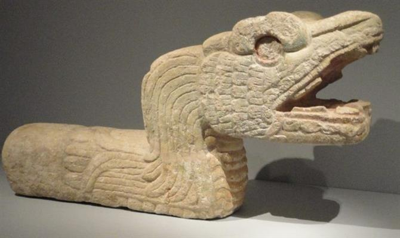

Quando falamos de pré-colombiano, estamos nos referindo ao período histórico do continente americano anterior à chegado de Cristóvão Colombo à América (1492). Nesse sentido, estamos nos referindo, principalmente, aos povos Maias, Incas e Astecas.
Na pintura, os artistas astecas utilizaram cores fortes e retrataram, principalmente, cenas do dia-a-dia. Essas pinturas eram feitas, principalmente, nas paredes de pirâmides, de templos e em túmulos.
Na arquitetura, os astecas se destacaram, principalmente, na construção de pirâmides e templos. Também foram muito eficientes no planejamento urbano.
Já no campo da escultura, os astecas se caracterizaram pela expressão de realismo e representação de questões religiosas (referências ao mundo espiritual), crenças e deuses.
Na pintura, a arte inca caracterizou-se pela representação de temas religiosos, principalmente, nos murais. Destaque também para os mantos pintados (arte têxtil) com muitas cores e figuras geométricas.
A escultura caracterizou-se pelos vasos de cerâmica, decorados com pinturas, e estatuetas de divindades (principalmente de ouro e prata).
Na arquitetura, os incas construíram, utilizando pedras e muito conhecimento matemático, templos religiosos, muralhas, canais de água, casas, etc.
Pinturas marcadas por cores fortes e grande sofisticação. Como os maias possuíam um sistema de escrita, muitas pinturas possuíam textos explicativos. As pinturas retratavam deuses, mitos, cenas agrícolas e pessoas importantes.
Na arquitetura, destacaram-se na construção de templos e pirâmides. Nessas construções, os artistas maias faziam relevos para docorar os ambientes. A suntuosidade foi uma das principais características da arquitetura maia.
Na escultura, podemos destacar vasos de cerâmica decorativos, esculturas de divindades e as máscaras funerárias.